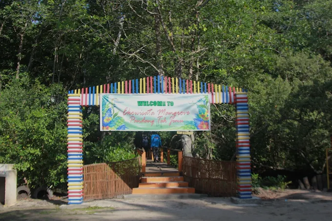
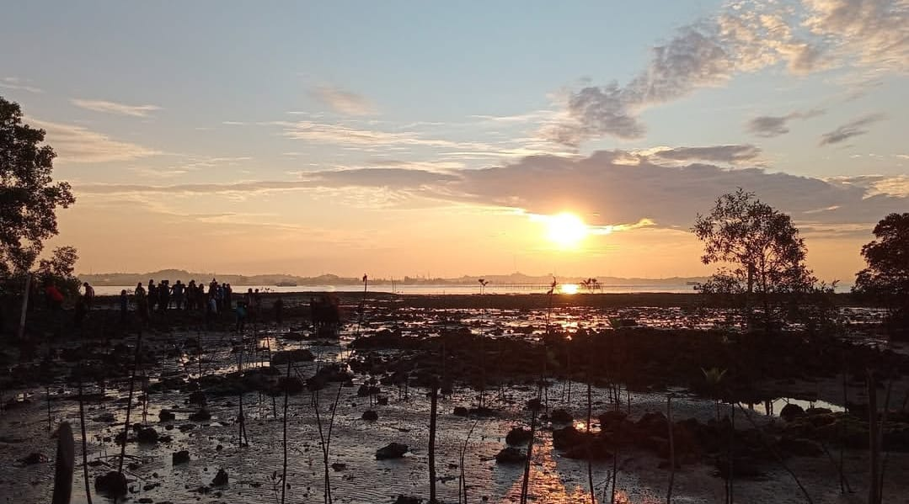

29 Desember 2025

Belajar kehidupan orang lain emang bisa…?🤔 Hi guys! Kalian tau ga sih kalau misalnya kalian liburan atau datang berkunjung di Ekowisata Mangrove Pandang Tak Jemu itu kalian bisa dapat banyak feedback? Siapa bilang liburan hanya ke mall atau ke cafe aja? Kalau liburan ke Ekowisata Mangrove Pandang Tak Jemu kalian bisa dapetin banyak hal tau. Spot foto yang Instagramable yang pastinya latar belakangnya alam yang indah serta bisa refreshing dan tenangkan pikiran juga loh.

Eits engga itu aja, disini kalian bisa ngerasain vibes desa yang asik, kenapa kok bisa? Karena penduduk disekitarnya itu ramah guys, jadi kalian ga akan ngerasa canggung nantinya. Feedback lainya kalian bahkan bisa ikut pembuatan kerajinan lokal, cara menanam mangrove, nyicipin kulinernya, atau sekedar ngobrol santai. Pokoknya seru deh, dijamin buat kalian yang datang kesini nggak akan rugi. Jadi tunggu apalagi, Cus datang dan kunjungi Ekowisata Mangrove Pandang Tak Jemu!😉